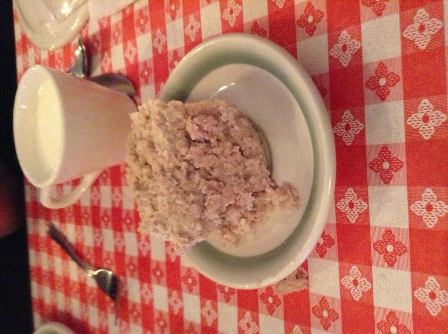

Cretons (Gorton)
Poppa kept 2 versions of this dish.
Follow any recipe, mix and match, or use for inspiration for your own version. That's how Poppa did it.
Cretons (gorton)

Photo: CoveyHill (CC BY-SA 3.0)
A French-Canadian seasoned ground pork spread (cretons), simmered with onion, garlic, Bell seasoning, milk, and bread crumbs until thick, then chilled in a bowl or ramekins.
Directions
- In a large saute pan, add the pork and cook until no longer pink, about 3 to 5 minutes. Add the onions and garlic, and cook for 1 minute. Add the salt, pepper and Bell seasoning and cook for 1 minute. Add the milk and bread crumbs and cook for 3 minutes over medium heat, stirring to break up the meat. Reduce heat to low, cover and cook, stirring occasionally, until the pork is very tender and most of the liquid is evaporated, about 1 hour and 15 minutes. Remove the lid and cook uncovered, stirring occasionally, until the mixture is thick and all liquid is evaporated, about 10 to 15 minutes. Remove from heat and adjust seasoning, to taste. Transfer to a decorative bowl or several smaller ramekins, smoothing the top with a rubber spatula.
- In a large saute pan, add the ground pork and cook until no longer pink, about 3 to 5 minutes.
- Add the finely chopped onions and minced garlic, and cook for 1 minute.
- Add the salt, pepper, and Bell seasoning, and cook for 1 minute.
- Add the whole milk and fine bread crumbs and cook for 3 minutes over medium heat, stirring to break up the meat.
- Reduce the heat to low, cover, and cook, stirring occasionally, until the pork is very tender and most of the liquid has evaporated, about 1 hour and 15 minutes.
- Remove the lid and cook uncovered, stirring occasionally, until the mixture is thick and all the liquid has evaporated, about 10 to 15 minutes.
- Remove from the heat and adjust the seasoning to taste.
- Transfer to a decorative bowl or several smaller ramekins, smoothing the top with a rubber spatula.
Goes well with
Gorton
Photo: Gene Hunt (CC BY 2.0)
A French-Canadian ground pork spread (gorton) simmered with onion and whole cloves, then drained and chilled in a mold until firm.
Directions
- Shred pork add seasoning add water just to cover meat, add whole cloves to onion (spike on) for easy removal later. Simmer slowly until most water has disappeared. Remove all cloves, take count. Drain, pour into dish or mold and chill till firm.
- Shred the pork and add the seasoning.
- Add water just to cover the meat.
- Stick the whole cloves into the whole onion (spikes on) for easy removal later, and add to the pork.
- Simmer slowly until most of the water has disappeared.
- Remove all the cloves, taking a count so none are left behind.
- Drain, pour into a dish or mold, and chill until firm.
Goes well with
https://lizotte.cool/recipe/cretons-gorton.html